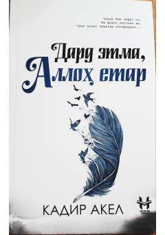

DEOg'ir sinovlar va ichki iztiroblardan so'ng huzur sari yo'l olgan insonning hayotiy hikoyasi.
Ushbu roman insonning ruhiy iztiroblari, kechinmalari va qiyinchiliklardan so'ng huzur sari qilgan ta'sirli sayohati haqida hikoya qiladi. Kitobxonni o'zini anglashga va hayot sinovlariga sabr bilan yondashishga chorlaydi. Asar muallifi Kadir Akelning o'zbek tiliga o'girilgan ikkinchi romanidir.